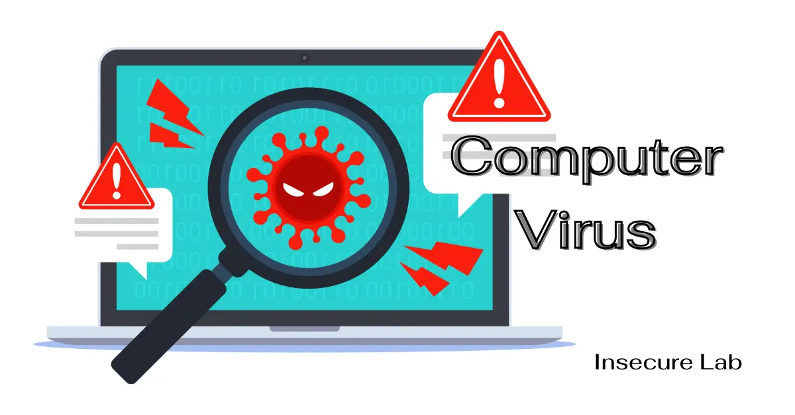

১. ভাইরাস (Virus)
ভাইরাস একটি প্রোগ্রাম যা স্বয়ংক্রিয়ভাবে নিজেকে কপি করে এবং অন্যান্য ফাইল বা কম্পিউটারে ছড়িয়ে পড়ে। এটি সিস্টেমের কার্যক্ষমতা নষ্ট করতে পারে।

৩. স্পাইওয়্যার (Spyware)
স্পাইওয়্যার ব্যবহারকারীর অজান্তে তথ্য চুরি করে যেমন পাসওয়ার্ড, ব্রাউজিং হিস্টরি ইত্যাদি। এটি গোপনে কার্যকর হয়।
৫. অ্যাডওয়্যার (Adware)
অ্যাডওয়্যার ব্যবহারকারীর অজান্তে বিজ্ঞাপন প্রদর্শন করে এবং অনেক সময় ইচ্ছার বিরুদ্ধে সফটওয়্যার ইনস্টল করে।
৭. সুরক্ষার উপায়
- নিয়মিত অ্যান্টিভাইরাস ব্যবহার ও আপডেট করুন।
- অজানা ইমেল বা লিঙ্কে ক্লিক করবেন না।
- বিশ্বস্ত উৎস ছাড়া সফটওয়্যার ইনস্টল করবেন না।
- গুরুত্বপূর্ণ তথ্য নিরাপদে সংরক্ষণ করুন।